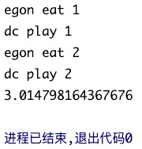

协程
运行状态¶
回顾下任务的三种运行状态.(阻塞、非阻塞)
阻塞: IO阻塞
非阻塞: 运行 或 就绪.
Ps: 上述是在介绍进程理论时提及进程的三种执行状态.
但要知道 线程才是执行单位, 所以也可以理解为线程的三种状态
cpu正在运行一个任务,会在两种情况下切走去执行其他的任务
(注意! cpu切换任务执行这一操作是由 操作系统 来强制控制的)
1> 一种情况是该任务发生了阻塞
2> 另外一种情况是该任务计算的时间过长或有一个优先级更高的程序替代了它
第一种情况 的切换. 在任务一遇到io情况下切到任务二去执行
这样就可以利用任务一阻塞的时间完成任务二的计算,效率的提升就在于此
第二种情况 并不能提升效率,只是为了让cpu能够雨露均沾,实现看起来所有任务都被“同时”执行的效果;
若多个任务都是纯计算的,(第二种情况)这种切换反而会降低效率.
协程¶
本节的主题是 基于单线程来实现并发, 即只用一个主线程 (很明显可利用的cpu只有一个) 情况下实现并发
注意哦,在OS看来,协程就是一个单线程.
在操作系统这门课中,只有进程、线程这两个概念,协程是程序员想出来的一个东西.Hhh
协程介绍¶
概念¶
协程: 是单线程下的并发, 又称微线程、纤程. 英文名Coroutine.
一句话说明什么是协程: 协程是一种用户态的轻量级线程, 即协程是由用户程序自己控制调度的.
再换个说法 -- 协程指的是单线程下由应用程序级别实现的并发.
即把本来由操作系统控制的切换+保存状态,在应用程序里实现了!用协程的目的在于: 把单个线程的io降到最低, 最大限度的提升单个线程的执行效率!
对于单线程下, 我们不可避免程序中出现io操作, 但如果我们能在自己的程序中（即用户程序级别而非操作系统级别）控制单线程下的多个任务能在一个任务遇到io阻塞时就切换到另外一个任务去计算, 这样就保证了该线程能够最大限度地处于就绪态, 即随时都可以被cpu执行的状态, 相当于我们在用户程序级别将自己的io操作最大限度地隐藏起来, 从而可以迷惑操作系统, 让其看到: 该线程好像是一直在计算, io比较少, 从而更多的将cpu的执行权限分配给我们的线程!!!
那如何办到呢？协程就不得不闪亮登场啦!! (⁎⁍̴̛ᴗ⁍̴̛⁎)
我们先来回想一下并发的本质: 切换 + 保存状态 OS控制cpu切换线程, cpu来回执行不同线程对应的任务
换一个说法,在未学习协程之前,我们的认知里,一个线程对应着一个任务(就是一段函数代码), OS控制着cpu在这多个线程之间来回切换, 即cpu不停的来回运算 多个线程 上的 对应的任务/对应的函数代码..
并发的实现方案: 多进程、多线程 -- 本质都是在线程之间来回切换(因为线程才是cpu上的执行单位)
协程也实现了并发, 只不过它是在 单线程 下, 由 用户/应用程序 自己控制一个任务遇到io阻塞了就切换另外一个任务去执行(简单理解,就是把不同任务对应的代码往线程所在的进程里放,然后执行), 以此来提升效率. 即 让OS分配更多的CPU时间片给该单线程!!
单线程下三个任务,每个任务都是3s的IO时间.计算和切换时间忽略不计.
1> 这三个任务在一个线程里就是串着来的(遇到IO了,OS将cpu切给谁呢？还不是得等该线程IO做完),则需要9s的时间.
2> 假如在应用程序里控制任务的切换,在这期间,CPU一直在计算该单线程上的任务.
当该线程遇到IO就切换该线程执行的任务(做IO就是调用下系统接口).
当IO做完,单线程也将三个任务都做完了.需要3s.
特别强调¶
OS控制cpu对线程的切换; 应用程序自己控制线程里多个任务的切换
即OS切换的单位是线程,协程切换的单位是线程内的任务..
python的线程属于 内核级别 的, 即由操作系统控制调度
(如单线程遇到io或执行时间过长就会被迫交出cpu执行权限,切换其他线程运行)
单线程内开启协程, 一旦遇到io, 就会从 应用程序级别 (而非操作系统) 控制切换, 以此来提升效率
(! ! !非io操作的切换与效率无关)
优缺点¶
对比操作系统控制线程的切换, 用户在单线程内控制协程的切换,优缺点如下:
[优点]
应用程序级别的切换速度要 远远高于 操作系统的切换.
因为OS管控的可不仅仅只是应用程序里的那几个任务
[缺点]
多个任务一旦有一个阻塞没有切,整个线程都阻塞在原地!!!
该线程内的其它的任务都不能执行啦!就没了并发一说啦.
一旦引入协程,就需要监测单线程下所有的IO行为,实现遇到IO就切换!
★ os只会分配给单线程一个cpu/核.所以单线程不能实现并行.
★ 多线程和单线程 实现的并发 同一时刻都只有一个任务在运行.
假设cpu有3个核
- 多进程可以利用多核,假设开了3个进程,同一时间可以有3个任务在运行(3个任务并行)
若其中一个任务阻塞了,其它核上的任务/进程不受影响,继续运行.
- 若是多线程呢？多线程只能实现并发,同一时间只有一个在运行
若其中一个任务阻塞了,OS会调度切换cpu执行的线程,也不会影响其他任务/线程继续运行.
- 那协程呢？协程意味着是单线程,一旦一个任务遇到IO了,应用程序应该立马将线程对应的任务切换到另外一个.
若阻在原地了,应用程序没有切,会导致其它任务都不能运行,全等待.
所以用协程要慎重,所有IO都不能让他阻在原地,都需要完成切换,一旦用了协程,就没有了回头路!!
以上就是对 上方 “特别强调” 的一个补充解释.. 精髓在于切换是谁在弄,是OS还是应用程序!
两个条件¶
从上面的介绍中提取两个关键字,分析得出要用代码实现 有意义的 协程,需要满足的两个条件.
1> 并发 -- 可以控制多个任务之间的切换, 切换之前将任务的状态保存下来, 以便重新运行时可以基于暂停的位置继续执行.
2> 提高效率 -- 可以检测io操作, 在遇到io操作的情况下才发生切换! 遇到IO切才能提高单线程的执行效率!
yield实现协程¶
yield是一种可以在单线程下来回切换任务,并且可以保存任务运行状态的方法
但是因为yield不能检测io操作,所以通过yield实现的协程不能提高效率,是没有意义的协程！
基于yield并发执行¶
执行代码该计算的活一个没少,还要加上来回切换的时间!! 还不如串着执行效率高.
import time
def func1():
"""任务1:接收数据,处理数据"""
while True:
yield
def func2():
"""任务2:生产数据"""
g = func1()
for _ in range(10000000):
next(g)
start = time.time()
func2()
stop = time.time()
print(stop - start) # 1.3778510093688965
"""
next(g)切换到任务1,得到返回值后切换到任务2,任务2继续for循环..
就这样在任务2和任务1之间来回切换!!
任务2和任务1都各自做了一千万次.
"""
串行执行¶
import time
def func1():
for _ in range(10000000):
pass
def func2():
for _ in range(10000000):
pass
start = time.time()
func2()
func1()
stop = time.time()
print(stop - start) # 0.5637822151184082
yield不能监测IO¶
yield 实现的协程代码 遇到io不会切换,会等着io做完后,继续运行
import time
def func1():
while True:
print("func1~")
yield
def func2():
g = func1()
for _ in range(10000000):
print("func2~")
time.sleep(3)
next(g)
func2()
"""
遇到time.sleep()语句,不会切换到另一个任务,而是会停在此处,等IO做完.
"""
gevent的使用¶
pip install gevent -i https://pypi.douban.com/simple
spawn异步提交¶
import gevent
def eat(name):
print("%s eat 1" % name)
gevent.sleep(2)
print("%s eat 2" % name)
def play(name):
print("%s play 1" % name)
gevent.sleep(3)
print("%s play 2" % name)
# -- gevent.spawn() 异步提交任务 返回一个Greenlet对象
g1 = gevent.spawn(eat, 'egon') # -- g1 <Greenlet at 0x7f9d4927d400: eat('egon')>
g2 = gevent.spawn(play, 'dc') # -- g2 <Greenlet at 0x7f9d493fb900: play('dc')>
"""
g1=gevent.spawn(func,1,,2,3,x=4,y=5)创建一个协程对象g1
spawn括号内第一个参数是函数名,如eat,后面可以有多个参数(位置实参或关键字实参),都是传给函数eat的.
"""
Q: 一执行该文件代码,控制台直接显示提示信息 "进程已结束,退出代码0" .
也就是,eat和play两个任务压根没运行.进程就结束了.这是怎么一回事呢？
A: 因为 gevent.spawn() 是异步提交任务的方式.提交完任务后不会原地等待,会直接运行下一行代码.
这里异步提交完eat和play任务后,主线程就结束啦.. 我们知道进程会等所有的线程结束后再结束.
协程是单线程, 主线程结束了,进程也就结束了.. 但eat和play两个任务还没来得及起来!!
join操作¶
那如何是好?主要问题在于协程是单线程,主线程一死,进程也就死了.. 单线程里的任务也就运行不了啦.
那就等主线程里的任务都运行完毕后,再让主线程安详的死去..Hhh
在程序最后添加代码 gevent.sleep(4) ??? 不妥, 任务里的时间是我们模拟的,现实中的IO时间是不确定的.
我们应该用join操作来解决!!
import time
import gevent
def eat(name):
print("%s eat 1" % name)
gevent.sleep(2)
print("%s eat 2" % name)
def play(name):
print("%s play 1" % name)
gevent.sleep(3)
print("%s play 2" % name)
start = time.time()
g1 = gevent.spawn(eat, 'egon')
g2 = gevent.spawn(play, 'dc')
# gevent.sleep(4)
g1.join()
g2.join()
print(time.time() - start) # 3.014798164367676
"""
g1.join()
g2.join()
上述两行代码可以合并为一步 -- gevent.joinall([g1,g2])
Ps: g1.value # -- 拿到eat的返回值
"""
"""
遇到IO阻塞时会自动切换任务
这里只有两个任务,遇到IO就切,来来回回的切,eat的IO先执行完,所以接着会先打印的`egon eat 2`.
可以看到程序的运行时间是3秒多一点点.如果两个任务是串行执行的话,用时会是5秒多一点点.
SO,协程遇到IO进行切换,程序的效率得到了提升!
"""

monkey补丁¶
若将eat和play两个任务中的gevent.sleep()语句改成time.sleep()语句,就不会有遇IO就切换的效果啦!
看样子,gevent只能实现自己通过gevent.sleep()语句模拟的IO行为,其他的IO行为识别不了..
那此模块不就白瞎啦？no! 可以打一个补丁来解决.
简单记忆: 将from gevent import monkey;monkey.patch_all()放到文件的开头!!!
验证协程是单线程¶
我们可以用threading.current_thread().getName()来查看每个g1和g2
查看的结果为DummyThread-n,即假线程
from gevent import monkey, spawn
monkey.patch_all()
from threading import current_thread
import time
def eat():
print("%s eat 1" % current_thread().name)
time.sleep(2)
print("%s eat 2" % current_thread().name)
def play():
print("%s play 1" % current_thread().name)
time.sleep(3)
print("%s play 2" % current_thread().name)
g1 = spawn(eat)
g2 = spawn(play)
print(current_thread().name)
g1.join()
g2.join()

gevent的应用¶
通过gevent实现单线程下的socket并发
注意:
from gevent import monkey;monkey.patch_all()一定要放到导入socket模块之前,否则gevent无法识别socket的阻塞Ps: 当然可以自己运用网络IO模型实现协程!!
有500个客户端与服务端建立连接,服务端用协程肯定比服务端开启500个线程的效率高.
客户端¶
# -- 以多线程的形式模拟多个客户端
from socket import *
from threading import Thread, current_thread
def task():
client = socket(AF_INET, SOCK_STREAM)
client.connect(("127.0.0.1", 8080))
while True:
msg = "%s say hello" % current_thread().name
client.send(msg.encode('utf-8'))
data = client.recv(1024)
print(data.decode('utf-8'))
if __name__ == '__main__':
for i in range(500):
t = Thread(target=task)
t.start()
服务端¶
from gevent import monkey, spawn
monkey.patch_all()
from socket import *
def talk(conn):
while True:
try:
data = conn.recv(1024)
if len(data) == 0: break
conn.send(data.upper())
except ConnectionResetError:
break
conn.close()
def server(ip, port, backlog=5):
s = socket(AF_INET, SOCK_STREAM)
s.bind((ip, port))
s.listen(backlog)
while True:
conn, addr = s.accept()
spawn(talk, conn)
if __name__ == '__main__':
g = spawn(server, '127.0.0.1', 8080)
g.join()
"""
main函数里的第一行代码异步提交了一个任务1(任务2干的是建连接的活),不等待直接执行下一行代码`g.join()`
接下来会依次执行server函数体的代码,直到遇到了accept语句阻塞.
gevent模块立马开始尝试切换任务,但目前只提交了一个任务.切换不了.
当有个客户端与服务端建立了连接,阻塞结束,接着执行`spawn(talk, conn)`又异步提交了一个任务2
提交完后(任务2干的是通信循环的活),回过头(for循环)又accept阻塞等待其他客户端建立连接.
同样的,此时遇到阻塞,gevent模块依旧会尝试切换任务.
此时会切换到任务2的执行,任务2中recv也会阻塞住等待对应客户端的消息.
接着切换任务,若任务1任务2都阻塞,会在任务1任务2之间来回切来回切
直到有新的客户端连接进来或者收到新消息..
以此循环,当服务端连接的客户端越来越来多,协程中的任务数会越来越多(总任务数 = 连接客户端数 + 1)
<提交一个任务会建立一个协程对象,对应一个任务,但归根到底,真正存在的只有一个线程>
就这样.协程实现了多个任务的并发!(切的速度很快!)
"""
协程的其它应用举例: https://www.cnblogs.com/linhaifeng/articles/7429894.html#_label6
浅谈一下nginx.
nginx套接字服务端软件 -- 负责接收浏览器请求.
简单来说,nginx将机器上的本地文件打开,将内容读出来发给客户端. 就是一个下载的过程.
nginx的效率高,它结合了多进程多线程协程.(底层用C语言写的)
大体是这样做的,有几个cpu就会先开几个进程,保证每个cpu都用上了.
每个进程内又开了一堆线程,每个线程内实现了遇到IO就切换的协程..
把单个线程的IO降到最低,保证单个线程的效率是最高的!!所以nginx支持的并发数高!!